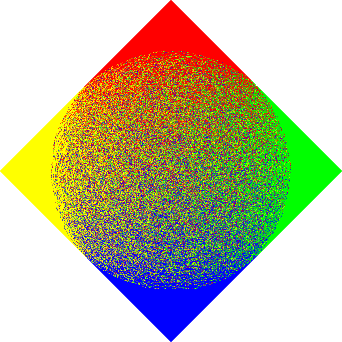

Bias: Tweak randomness in the orientation of the generated dominoes.
Step delay: Add a certain delay between each step of the animation.
Default color palette
Daltonic-friendly palette
Animations OFF
Animations ON
Xiana Carrera Alonso
Inspired by Mathologer
